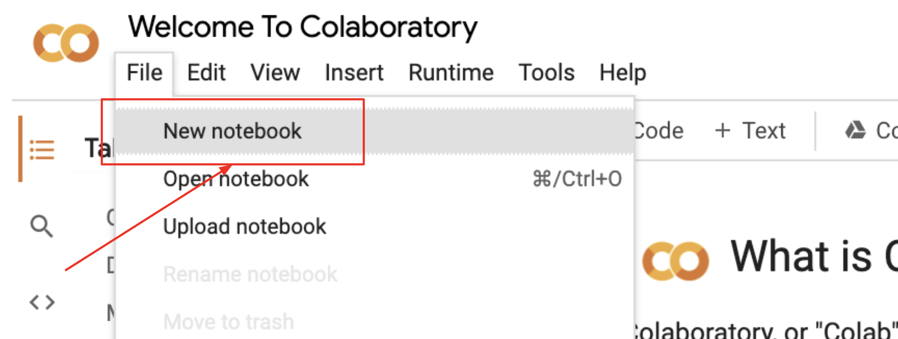
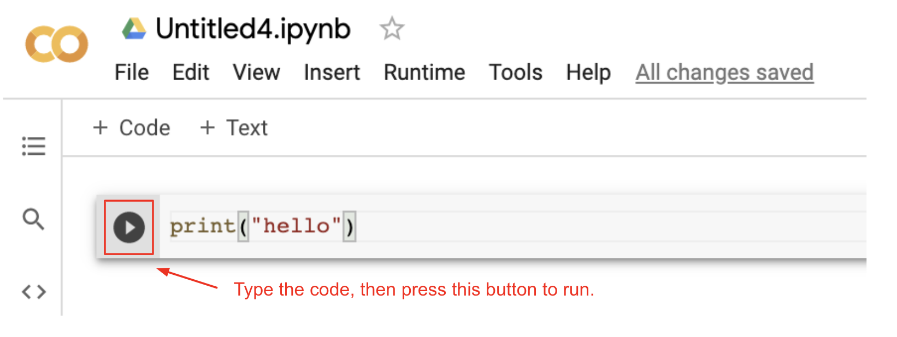
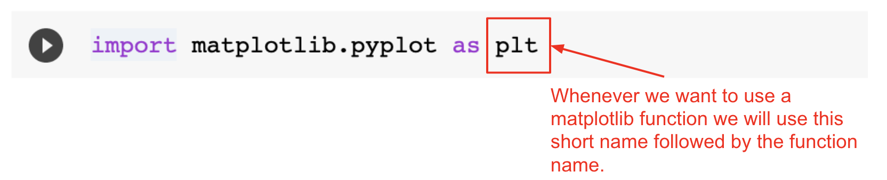

Lesson 3 - Data Science Tools
At the end of this lesson, you will be able to:
- Create a Google Colab computation notebook.
Computational notebooks
Data scientists use computational notebooks with Python, which are essentially laboratory notebooks for scientific computing.
The most popular computational notebook is Jupyter Notebooks. We will be using Google Colab which stores Jupyter Notebooks in your Google Drive.
Open up Google Colab and create a Notebook, click on the 'New Notebook' button, or if you are already in Google Colab, click on the 'File' menu and select 'New Notebook'.

Write a Python statement to print “Hello” and then click the run button.

All of your Notebooks will be in your Google Drive in a folder called Colab Notebooks (created by Google Colab).
Note: You are not expected to become an expert using Colab Notebooks or any of the tools used in this unit. Focus on learning how to find patterns in visualizations of data to learn something new. All of the code has been written for you. Your job is to choose the appropriate visualization for the questions you want to answer!
Activity
Open this Notebook and make a copy. Unlike Replit, Google Colab does not automatically make a copy for you when you start typing. You need to make a copy first!
Look around - what do you notice and wonder about? Follow the directions in the Notebook and make the changes.
Note: Python has a command (called import) that brings in additional libraries of functions into your program. We'll be using the import command to bring in three libraries into your Google Colab notebooks: pandas, matplotlib.pyplot, and seaborn - a chart library built on top of matplotlib that the notebooks use for some of the charts (you'll see it imported as sns).
Pandas
Pandas is a fast, powerful, flexible, and easy-to-use open-source data analysis and manipulation tool, built on top of the Python programming language. Using Pandas, we will convert comma-separated files (CSV) into dataframes. Pandas has functions to create charts and graphs to visualize the data.
To use the Pandas functions, import the library at the top of your notebook (import pandas as pd) and run:
Matplotlib
The matplotlib Python library is used to create high-quality graphs, charts, and figures. Matplotlib will allow us to add titles and legends to our charts.
Like we did with Pandas, you must import the library to use it. Add the following to the code block with the Pandas import (import matplotlib.pyplot as plt):

Good Reading
As you start thinking about analyzing data and interpreting charts, and coming to conclusions, here is an interesting article about 8 types of bias in data and how to avoid them.